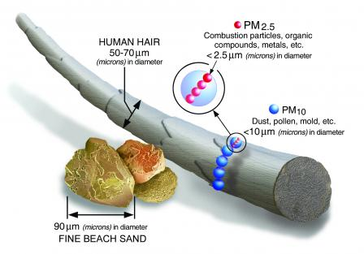

Забруднення повітря: наслідки та перспективи
Головними забруднючими компонентами в повітрі є пил, оксиди сірки, азоту та озон. Окрім них також оксиди вуглецю і важкі метали.
Ключова увага в контексті впливу на здоров'я людини приділяють так званим "піемам" (PM 2.5 та PM 10).
Хто такі PM2.5 та PM 10?
PM (particular matter) 2.5 та 10 – простіше кажучи, часточки розміром до 2.5 мікрон чи від 2.5 до 10 мікрон відповідно. Щоб легше уявити, для порівняння товщина людської волосини – близько 70 мікрон.

Фото: http://bit.do/fiueT
Ці часточки можуть мати різну природу-air-quality-and-health) та складатися із різних компонентів – різноманітних солей, в тому числі і важких металів, сажі, пилу, рідини. Розміри, що власне внесені в їх назви, впливають на аеродинамічні властивості та спосіб взаємодії із нашим організмом.
Часточки із діаметром 10 вже доволі малі, щоб потрапляти із потоком повітря глибоко в легені, а часточки 2.5 можуть проникати із альвеол у кровоносне русло.
І звідки вони беруться?
PM 10 можуть утворюватися внаслідок багатьох природніх процесів і часто мають мінеральну природу. Їх джерелом можуть бути, наприклад, будівельні майданчики, незаасфальтовані дороги та відкриті грунти.
Утворення дрібніших частинок асоційовано із процесами згорання або ж хімічного перетворення інших забрюднювачів – діоксиду сірки, оксиду азоту. Тому у зростання їх кількості здійснюють внесок переважно промислові викиди, транспорт та будь-який дим.
Про дим: внесок тютюнового диму в забруднення повітря на вулицях іноді може перевищувати внесок від автомобільного транспорту.
Це особливо відчутно на вулицях із високими будинками, де формується своєрідний "каньон" і повітрообмін сповільнений. Дослідники проводили вимірювання часток PM у пішохідних зонах та зонах інтенсивного транспортного руху і виявили гірший стан повітря у вечірній час у пішоходній зоні саме внаслідок тютюнопаління. Сьогодні тютюнопаління заборонене на вулицях Японії, у парках багатьох міст США.
Паління кальянів нічим не ліпше, індекс якості повітря у приміщеннях, де палять кальяни, більше 300 одиниць, що відповідає найвищому ступіню небезпечності згідно класифікації рівнів забрудненості повітря.
Забруднене повітря із кальянних барів потрапляє назовні, що здійснює вплив на громадське здоров'я – такі висновки зробили британські дослідники (так, вони справді британські і досліджували повітря у закладах Бірмінгему). І шкода, що вони не бачили вулиці Києва влітку, де відвідувачі кафе на відкритих терасах часто палять кальяни просто в обличчя перехожим. До слова, у цих дослідженнях лише четверта частина персоналу кафе із кальянним меню підозрювала про можливу шкоду для свого здоров'я – просто від перебування на своєму робочому місці.
І про повітря у приміщенні. Не варто надміру захоплюватися палінням свічок та ароматичних паличок. Також не забувайте про витяжку при користуванні газовою плитою.
Чому це важливо?
Здавалося б, в світі є стільки небезпек, чому ж якась дрібнота по кілька мікрометрів має викликати якісь серйозні переживання?
Однак численні дослідження стверджують, що переживати таки є, за що і справа не лише у тому, що чутливим групам людей дере в горлі. При дії цих часток може відбуватися порушення бар'єрної функції епітелію носа. Це відображає підвищення частоти ринітів та риносинуситів у більш забруднених зонах.
PM2.5 можуть накопичуватися в тканинах легень, викликають місцеві ураження, запальні процеси та проникають у кров . Як наслідок – підвищення сприйнятливості до інфекційних респіраторних захворювань, астми, хронічного обструктивного захворювання легень, фіброзних утворень.
Вже існують переконливі дані про вплив забруднення повітря та власне PM на виникнення раку легень , а також зв'язок їх впливу із виникненням раку сечового міхура.
Тому віднедавна забруднення повітря та частки PM прокласифіковано як канцерогенні.
Дослідження свідчать, що PM2.5 підвищують захворюваність на серцево-судинні хвороби та смертність від них як при короткотривалому так і довготривалому впливі цих часток.
Короткострокові епізоди погіршення якості повітря не залишаються непоміченими медиками – кількість викликів, пов'язаних із респіраторними ускладненнями та серцевими нападами істотно зростає. Зростає частота виникнення ішемічної хвороби серця у людей середнього віку.
PM2.5 провокують запалення на місцевому та загальному рівні, є факторами оксидативного стресу та порушення згортання крові, ураження ендотелію судин.
Гострий вплив PM2.5 підвищує ризики аритмії та відповідно, її наслідків. Такий вплив більше проявляється у людей із гіпертензією.
Дія цих забруднюючих часток впливає на внутрішньоутробний розвиток . Підвищені концентрації PM2.5 в останньому триместрі вагітності може підвищувати схильність дітей до респіраторних хвороб протягом першого року життя. Також є дані про вплив цих часток на розвиток вродженого гіпотиреозу.
Сьогодні говориться і про відтермінований вплив забрудненного повітря на здоров'я людей, наприклад показано, що РМ2.5 викликають зміни у мозку, які ведуть до погіршення пам'яті.
Що робити, куди бігти?
- Слідкувати за показниками забруднення повітря. І не бігти на пробіжку у випадку їх підвищення. Уникати надмірного перебування надворі, особливо, у випадку наявних серцево-судинних хвороб.
- Старатися планувати свої маршрути так, щоб по можливості оминати вулиці із інтенсивним рухом.
- Гарне вирішення для приміщень – очищувачі повітря.
- Уникати інших кардіоваскулярних ризиків – тютюнопаління та алкоголю.
- Уникати задимлених приміщень, у тому числі від тютюну та кальянів.
- Вибір на користь громадського транспорту замість приватного, а обираючи приватний транспорт – орієнтуватися на стандарти екологічної безпеки.
Чого вимагати?
Ситуація із погіршенням якості повітря, на жаль, не може бути вирішена без активної позиції громадськості та системного рішучого законодавчого впливу.
Тому необхідними-air-quality-and-health) є наступні кроки:
- належний контроль якості повітря на сучасному рівні;
- контроль промислових та транспортних викидів;
- сприяння розвитку інфраструктури для велосипедного транспорту та електространспорту;
- обмеження тютюнопаління та паління кальянів на вулицях та в інших громадських місцях;
- контроль і заборона спалювання листя та інших відходів.

Photo by Steve Halama on Unsplash